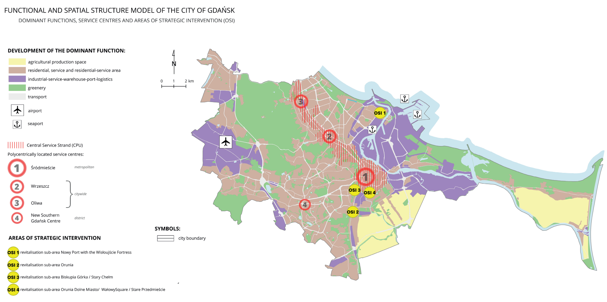
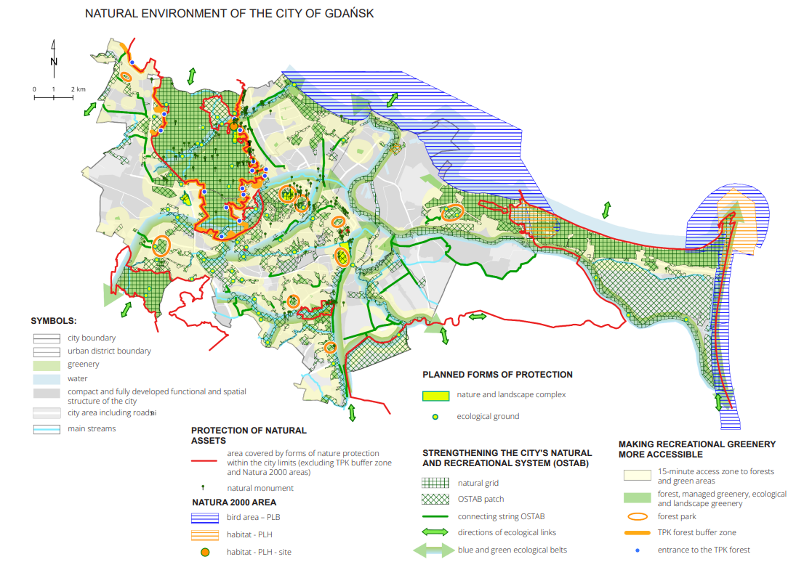

5 Week 4: Policy
In week 4 we looked at how remotely sensed data has been used in policymaking. For example using NDVI to look at the benefits of greenspace on both mental and physical health, or the impact of urban heat such as the Urban Heat Island effect.
We were asked to imagine how a remotely sensed dataset may be incorporated into policymaking at a city, national or international level.
In this week I’ll focus on Gdansk and the Gdansk 2030 Plus City Development Strategy, specifically the Green City objective which aims to improve the biodiversity of the city and provide more green spaces to residents.
5.1 Summary
Although Poland does not have nation wide climate law it is bound by EU legislation to reduce greenhouse gas emissions.
Nevertheless cities in Poland have increasingly chosen to implement their own strategies to ensure preparedness for the effects fo climate change. However the institutions responsible for maintaining the natural environment are often uncoordinated due to different responsibilities sitting with Regional Directors of environmental protection or being the responsibility of Voivodeship-level government.
The City Development Strategy Gdansk 2030 Plus aims to help mitigate the climate-related risks due to it’s coastal position and continued development of the city’s infrastructure, by coordinating the policies of several environmental bodies towards key strategic priorities.
To begin the process of drafting this strategy over 3 thousand people, and institutions such as universities and businesses were surveyed about their priorities for the City’s development.
Around 63% of those surveyed identified greenery and biodiversity as their key priority for the city, with policies such as adding 100 hectares of new parks, and 50,000 new trees being some of the most popular. Piotr Krzyszewski (2024)
5.1.1 Green City policies
Planting 50,000 trees
Reduction of greenhouse gas CO2 emissions by 30%
Establishing a network of green belts along water courses
Implementation of a Southern Park
5.1.2 Link to UN Sustainable Development Goals
The greening policies backed by a majority of those surveyed also align with broader international climate strategies such as the Sustainable Development Goals.
In particular the Gdansk Development Strategy aligns with Goal 15 to “protect, restore and promote use of terrestrial ecosystems, sustainably manage forests, combat desertification, and halt reverse land degredation and halt biodiversity loss”. (DESA (2024))
Focusing on maintaining the health and biodiversity of existing forests such as Lasy Oliwskie, in addition to planting 50,000 trees, and adding a new Southern Park will help to preserve existing biodiversity and create new protected spaces for natural habitats to develop and thrive. An interesting proposal is to also create a network of green areas and water and increase 15 minute access zones to forests and green areas.


5.2 Applications:
There are many opportunities for using remotely sensed data in relation to greening policies, whether its through identifying sites suitable for additional trees, new parks or green corridors, or monitoring progress of such policies in increasing green land cover. I will outline potential applications of NDVI and LULC with references to how these have been used in other studies.
As shown above Gdansk has a diverse natural environment, as a coastal city with large forested areas made accessible for residents, a key part of using remotely sensed data would be first to measure the existing health and extent of these green areas.
This can be primarily achieved by using the Normalised Difference Vegetation Index (NDVI) which measures the spatial distribution of vegetation. I measured the NDVI for Gdansk in August 2025 based on Landsat 8 data which had a 15-30m resolution in Week 3. This was useful for identifying the presence of green areas but as explored by Iglesia Martinez and Labib (2023) NDVI can be more sensitive to certain types of vegetation such as trees at various buffer levels in their case study of Greater Manchester. Using Sentinel 2 data instead could create a slightly more high resolution picture of this index.

Looking at NDVI alongside Land Use-Land Cover data from Sentinel 2 could be useful in this exercise, as it was also used by Iglesia Martinez and Labib (2023), who obtained the data from Dennis et al. (2018) at 10m resolution. Using this approach with Gdansk could support monitoring change over time to understand the progress of greening activities. This has been done by looking and LULC data with time-series methods by DU et al. (2010) looking at Landsat images to assess land cover and vegetation change in Xuzhou over 20 years.
Or as a start it could help to create an even more detailed picture of green spaces within urban environments at a 10m resolution.
However it is important to understand some limitations, even at 10m resolution dense urban settings become harder to distinguish at this pixel size. To look at neighbourhood level greening policies where open space may be scarce we may need to opt for even higher resolutions of 1-5m, but the trade-off here is between the temporal availability and price of this data.
-studies on the impact of greening policies
5.3 Reflections:
I found it interesting to look at the City of Gdansk and it’s Development Strategy, knowing that most residents prioritised increasing green spaces in the city led me to think about the possible uses of remotely sensed data to identify areas for greening, or monitor progress in the future.
I think the combination of NDVI and LULC measures at a high resolution of 10m can provide a good level of detail, and methods like time series can be used to monitor change.
Reading about the advancements in using remotely sensed data for evidence-based policy making was really interesting. I think the summary presented in Kadhim, Mourshed, and Bray (2016) was extremely useful for understanding what is available, the tradeoffs between spatial and temporal resolutions, and the large number of studies cited as examples.
I used this article as a starting point for understanding the current challenges for working with remotely sensed data to visualise and model dense urban landscapes. As this is an emerging area, most open source satellite data goes up to 10m resolution, but for these urban settings even higher resolutions may be needed.
I would like to learn more about how to incorporate more machine learning algorithms, time series and regression analysis on remote sensed data so I am looking forward to exploring this more with Google Earth Engine.